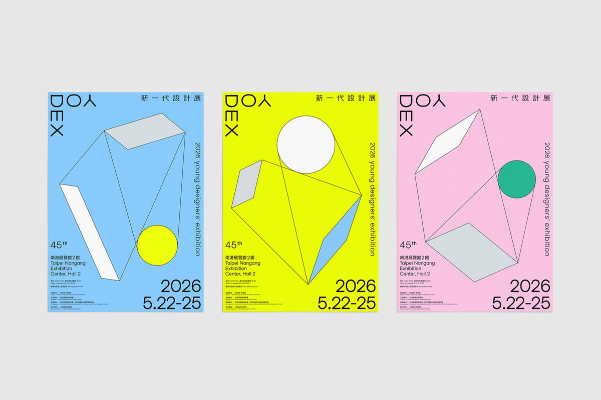

45TH YODEX EXHIBITION
設計的重力，創意的加速度。在變動的邊界中，重新定義設計的可能。
2026.05.22 — 05.25
「新一代設計展」自 1981 年開辦至今，已成為全球最具規模之設計品牌展覽之一。2026 年以「變動邊界」為題，邀請全台設計學子與國際創作者，探討在新技術、新環境與新思維交織下，設計如何突破框架，觸碰未來。
橫跨全台 60 餘所大專院校、140 個設計系所，超過 3,000 件作品同步展出。

10:00 - 17:00 | 展覽正式對外開放
11:00 - 12:00 | 45 屆開幕剪綵慶典
10:00 - 18:00 | 週末延長開放
14:00 - 16:00 | 國際設計論壇：變動中的邊界
10:00 - 18:00 | 週末延長開放
15:00 - 17:00 | 頒獎盛典 - 南港 2 館 7 樓
10:00 - 17:00 | 企業媒合專場
16:00 - 17:00 | 展位撤場準備與閉幕
台北南港展覽館 2 館 (Taipei Nangang Exhibition Center, Hall 2)
文湖線或板南線至「南港展覽館站」，1 號出口出站即可抵達。
展館提供地下停車場，亦可使用周邊經貿二路收費停車場。
依最新衛福部公告之大型集會活動規範執行，敬請配戴口罩。
指導單位：經濟部、教育部
主辦單位：經濟部產業發展署
執行單位：財團法人台灣設計研究院